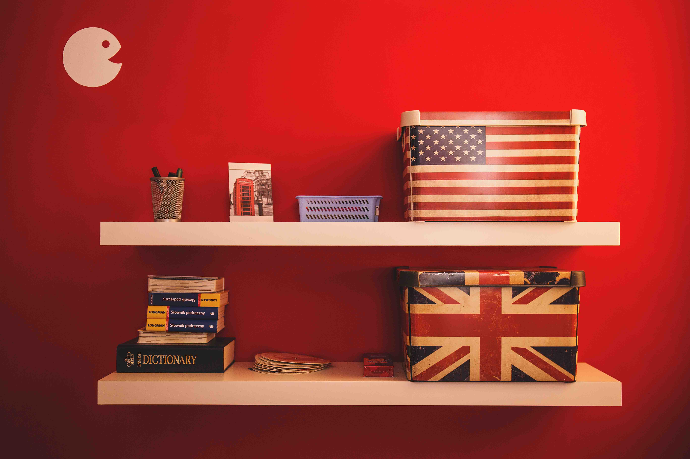

Англійська мова для дітей дошкільного віку
Англійська мова для дітей дошкільного віку проходить завжди весело і забавно. Порівняно з захоплюючою грою в яку карапуз із задоволенням поринає. За допомогою спеціально розроблених програм з вивчення іноземної мови дитина отримує базові мовні скіли, паралельно пізнаючи навколишній Світ і здобуваючи впевненість в своїх діях і силах. В нас дошкільнята розуміють що англійська - це весело і захоплюючи, а головне не нудно!
Головна перевага курсів, повне занурення в мовне середовище. Використання ігрових ситуацій, майстер класів та свят. Ці всі не стандартні підходи допомагають дітям розвивати особистість, вміння легко і вільно використовувати іноземну мову, як рідну, що дуже важливо.
Оптимальне поєднання різних методік, дозволяє зробити процес навчання ефективним і результативним. Заняття націлені на розвиток усіх мовних аспектів (залежить від вікової категорії): читання, говоріння, аудіювання та письма.
Вивчаючи англійську, діти вчаться працювати не тільки з інформацією, а також розвивають творче мислення, пам'ять, здатність концентруватися, дрібну маторіку. Безліч практичних вправ дозволяє подолати психологічні бар'єри. Діти вчаться без коливань, з упевненістю відповідати на будь-які питання та активно брати участь в навчальному процесі.
Важливо викликати стійкий інтерес до дослідження мови. Тому наші педагоги відвідують різні навчальні тренінги, щоб бути в курсі останніх тенденцій в навчанні. А заняття готуються ретельно, враховуючи вікову психологію дітей: відбирається аудіо і відео матеріал, активності, ігри.
Всі курси розділені по віковим категоріям. Діти, незалежно від того 6 років або 2 роки, вивчають нову мову несвідомо, через ігри, сприймаючи інформацію через зір, на слух, через творчість і пісні.